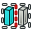

FreeCAD в первую очередь инструмент трёхмерного моделирования. Иногда, тем не менее, нам требуются плоские чертежи для документации, контрактов, разрешений и так далее. Верстак TechDraw используется для составления базовых технических чертежей на основе трёхмерной модели. Размерности и штриховка может быть добавлены в Виды.
Dimensions and hatched areas can be added to Views.
Обратите внимание, что если Ваша основная задача в составлении сложных плоских чертежей, Вам может быть лучше обратить внимание на специализированный инструмент вроде LibreCad.

Contents
Страницы и виды
Инструменты для создания Страниц и Видов
-
 New Default: Добавляет новую Страницу с использованием шаблона по умолчанию.
New Default: Добавляет новую Страницу с использованием шаблона по умолчанию. -
 New Pick: Добавляет новую Страницу с использованием выбранного шаблона.
New Pick: Добавляет новую Страницу с использованием выбранного шаблона. -
 New View: Добавляет двумерный вид Part::Feature.
New View: Добавляет двумерный вид Part::Feature. - New Multi: Добавляет вид нескольких Part.
-
 New Projection Group: Вызывает диалог создания Projection Group.
New Projection Group: Вызывает диалог создания Projection Group. -  New Section: Добавляет кросс-секционный вид Part::Feature.
-
 New Detail: Добавляет детальный вид Part::Feature.
New Detail: Добавляет детальный вид Part::Feature. -
 New Annotation: Добавляет к Странице текстовый блок.
New Annotation: Добавляет к Странице текстовый блок. -
 New Draft: Добавляет Вид объекта модуля Draft.
New Draft: Добавляет Вид объекта модуля Draft. -
 New Arch: Добавляет вид объекта Section Plane модуля Arch.
New Arch: Добавляет вид объекта Section Plane модуля Arch.
{kind=link}
{kind=link}
Размеры
Инструменты для работы с размерами
-
 New Length: Добавляет линейный размер.
New Length: Добавляет линейный размер. -
 New Horizontal: Добавляет размер горизонтальной дистанции.
New Horizontal: Добавляет размер горизонтальной дистанции. -
 New Vertical: Добавляет размер вертикальной дистанции.
New Vertical: Добавляет размер вертикальной дистанции. - New Radius: Добавляет размер радиуса.
-
 New Diameter: Добавляет размер диаметра.
New Diameter: Добавляет размер диаметра. -
 New Angle: Добавляет размер угла.
New Angle: Добавляет размер угла. - New Links: Привязывает один или более измерений к трёхмерной геометрии.
{kind=link}
{kind=link}
Импорт и Экспорт
Инструменты для экспорта страниц в другие приложения и включения объектов из других приложений.
-
 Save SVG: Сохраняет Страницу как файл SVG
Save SVG: Сохраняет Страницу как файл SVG - New Symbol: Вставляет символ SVG на Страницу.
-
 New Image: Вставляет изображение png/jpg на Страницу.
New Image: Вставляет изображение png/jpg на Страницу.
{kind=link}
Декорации
Инструменты для изменения внешнего вида Страниц и Видов
-
 Hatch Area: Заштриховывает замкнутый регион Вида.
Hatch Area: Заштриховывает замкнутый регион Вида. -
 Toggle Frames: Включает и выключает фреймы и метки на странице.
Toggle Frames: Включает и выключает фреймы и метки на странице.
These are tools for creating Pages.
- New Default: Adds a new Page using the default Template.
Views
These are tools for creating Views.
- New View: Adds a 2D View of a one or more Drawable Objects.
- New Projection Group: Invokes a dialog for creating Views of one or more Drawable Objects from multiple directions.
- New Section: Adds a cross-section View of one or more Drawable Objects.
- New Detail: Adds a detail View of a portion of an existing View.
- New Annotation: Adds a text block to a Page.
- New Draft: Adds a View of a Draft module object.
- New Arch: Adds a View of a Arch module Section Plane object.
-
 Spreadsheet: Inserts a view of a selected spreadsheet into a drawing.
Spreadsheet: Inserts a view of a selected spreadsheet into a drawing.
Clips
These are tools to create and manage clipped views.
-
 Clip: Inserts a clip group into a Page.
Clip: Inserts a clip group into a Page.
-
 ClipPlus: Adds a View to a clip group.
ClipPlus: Adds a View to a clip group.
-
 ClipMinus: Removes a View from a clip group.
ClipMinus: Removes a View from a clip group.
Dimensions
These are tools for working with Dimensions. Linear dimensions can be based on two points, one line or two lines.
- New Length: Adds a Length Dimension.
- New Horizontal: Adds a horizontal distance dimension.
- New Vertical: Adds a vertical distance dimension.
- New Radius: Adds a Radius dimension to a circle or circular arc.
- New Diameter: Adds a Diameter dimension to a circle or a circular arc.
- New Angle: Adds an Angle dimension between two straight edges.
-
 New Links: Links 1 or more Dimensions to 3D geometry.
New Links: Links 1 or more Dimensions to 3D geometry.
Import/Export
These are tools for exporting Pages to other applications.
Decoration
These are tools for changing the appearance of Pages and Views.
- Hatch Area: Applies a hatch pattern from a file to a Face.
-
 Geometric Hatch: Hatches a Face using an Autodesk PAT specification.
Geometric Hatch: Hatches a Face using an Autodesk PAT specification.
-
 New Symbol: Inserts an SVG symbol into a Page.
New Symbol: Inserts an SVG symbol into a Page.
- New Image: Inserts a png/jpg image into a Page.
- Toggle Frames: Turns View frames and labels on or off in a Page.
- Redraw Page: Redraws a Page without recalculating.
{kind=link}
Additional features
- Hatching: TechDraw supports a number of hatching techniques.
- Line Groups: default weights can be assigned to various line types.
Установка предпочтений
У модуля TechDraw есть экран настроек для установки значений по умолчанию.
Скриптование
Модуль TechDraw содержит Python API, так что Вы можете использовать его функции в скриптах и в макросах.
Ограничения
- TechDraw пока еще в стадии разработки. Будьте готовы к ошибкам!
- Если Вы хотите знать, что ожидается в процессе проектирования TechDraw, посмотрите Roadmap
- Чертежи и Python API в TechDraw не взаимозаменяемы с модулем Drawing. Можно конвертировать страницы Drawing в TechDraw с помощью программы на Python (moveViews.py). В одном документе FreeCAD можно иметь и страницы TechDraw, и страницы Drawing.
- В сравнении с модулем Drawing есть небольшие различия в определении редактируемых текстов в шаблонах.
- TechDraw пока ещё не был широко протестирован с новыми конструкциями PartDesign. Чтобы вставить вид объекта, созданного в PartDesignNext, следует выбрать в дереве Body, а не Part.
- TechDraw доступен, начиная с FreeCAD 0.17.
Обходные пути
- Пока не требуются.
Keep up with TechDraw plans and developments. Visit the TechDraw Roadmap.